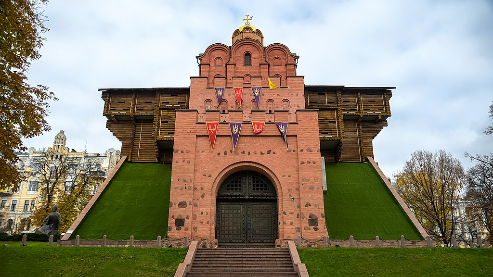
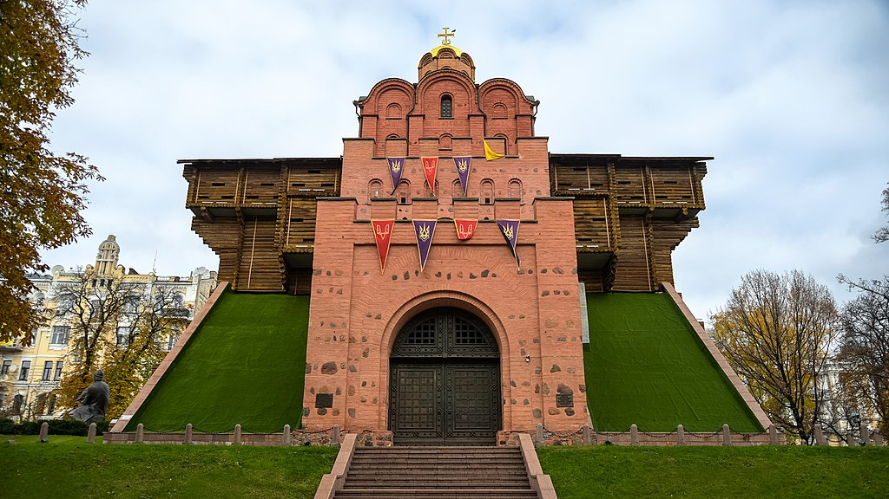
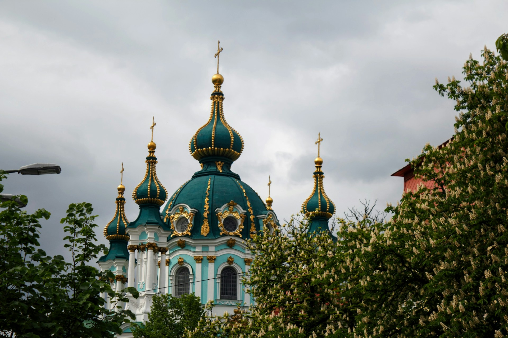
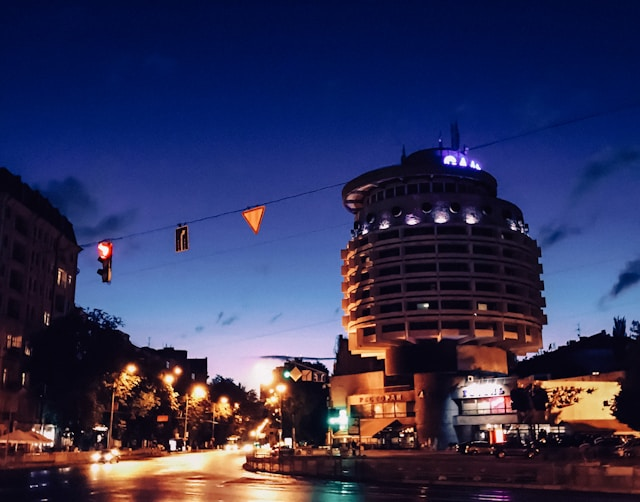

History of Kyiv
Kyiv has a rich and fascinating history dating back more than 1,400 years. It was a central hub for the Kyivan Rus' and remains a key city in Eastern European history.
The Heart of Ukraine
Kyiv, the capital of Ukraine, is a vibrant city full of history, culture, and beautiful landmarks. From its ancient churches to modern buildings, Kyiv has something for everyone.
Kyiv has a rich and fascinating history dating back more than 1,400 years. It was a central hub for the Kyivan Rus' and remains a key city in Eastern European history.
The cultural scene in Kyiv is vibrant, with numerous museums, theaters, and galleries that showcase both traditional Ukrainian culture and modern art.
Kyiv's nightlife is thriving, with plenty of bars, clubs, and restaurants open late into the night. Whether you're looking for a quiet evening or a wild party, Kyiv has it all.
